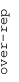
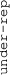

These results are also available as PDF and EPS documents.
Depending on your display resolution, scrolling or zooming may be necessary.
|  |
| 3 |
| 0 |
| -3 |
|  |
| GO_EXTRACELLULAR_MATRIX_STRUCTURAL_CONSTITUENT GO_EXTRACELLULAR_MATRIX_STRUCTURAL_CONSTITUENT | |||||||||||
| GO_HOMOPHILIC_CELL_ADHESION_VIA_PLASMA_MEMBRANE_ADHESION_MOLECULES GO_HOMOPHILIC_CELL_ADHESION_VIA_PLASMA_MEMBRANE_ADHESION_MOLECULES | |||||||||||
| GO_HYDROLASE_ACTIVITY_ACTING_ON_ACID_PHOSPHORUS_NITROGEN_BONDS GO_HYDROLASE_ACTIVITY_ACTING_ON_ACID_PHOSPHORUS_NITROGEN_BONDS | |||||||||||
| GO_NEUTROPHIL_MIGRATION GO_NEUTROPHIL_MIGRATION | |||||||||||
| GO_EXCITATORY_SYNAPSE GO_EXCITATORY_SYNAPSE | |||||||||||
| GO_SEMAPHORIN_RECEPTOR_BINDING GO_SEMAPHORIN_RECEPTOR_BINDING | |||||||||||
| GO_MONOOXYGENASE_ACTIVITY GO_MONOOXYGENASE_ACTIVITY | |||||||||||
| GO_POSITIVE_REGULATION_OF_LIPID_CATABOLIC_PROCESS GO_POSITIVE_REGULATION_OF_LIPID_CATABOLIC_PROCESS | |||||||||||
| GO_CALCIUM_DEPENDENT_CYSTEINE_TYPE_ENDOPEPTIDASE_ACTIVITY GO_CALCIUM_DEPENDENT_CYSTEINE_TYPE_ENDOPEPTIDASE_ACTIVITY | |||||||||||
| GO_NEGATIVE_REGULATION_OF_MACROPHAGE_ACTIVATION GO_NEGATIVE_REGULATION_OF_MACROPHAGE_ACTIVATION | |||||||||||
| GO_REGULATION_OF_T_HELPER_1_CELL_DIFFERENTIATION GO_REGULATION_OF_T_HELPER_1_CELL_DIFFERENTIATION | |||||||||||
| GO_NEGATIVE_REGULATION_OF_PEPTIDYL_THREONINE_PHOSPHORYLATION GO_NEGATIVE_REGULATION_OF_PEPTIDYL_THREONINE_PHOSPHORYLATION | |||||||||||
| GO_DNA_METHYLATION_INVOLVED_IN_GAMETE_GENERATION GO_DNA_METHYLATION_INVOLVED_IN_GAMETE_GENERATION | |||||||||||
| GO_LATE_ENDOSOME_MEMBRANE GO_LATE_ENDOSOME_MEMBRANE | |||||||||||
| GO_INTRINSIC_COMPONENT_OF_ENDOPLASMIC_RETICULUM_MEMBRANE GO_INTRINSIC_COMPONENT_OF_ENDOPLASMIC_RETICULUM_MEMBRANE | |||||||||||
| GO_MANNOSIDASE_ACTIVITY GO_MANNOSIDASE_ACTIVITY | |||||||||||
| GO_OXIDATIVE_PHOSPHORYLATION GO_OXIDATIVE_PHOSPHORYLATION | |||||||||||
| GO_POSITIVE_REGULATION_OF_ATPASE_ACTIVITY GO_POSITIVE_REGULATION_OF_ATPASE_ACTIVITY | |||||||||||
| GO_PROTEIN_DEMETHYLATION GO_PROTEIN_DEMETHYLATION | |||||||||||
| GO_REGULATION_OF_MITOCHONDRIAL_OUTER_MEMBRANE_PERMEABILIZATION_INVOLVED_IN_APOPTOTIC_SIGNALING_PATHWAY GO_REGULATION_OF_MITOCHONDRIAL_OUTER_MEMBRANE_PERMEABILIZATION_INVOLVED_IN_APOPTOTIC_SIGNALING_PATHWAY | |||||||||||
| GO_GTP_DEPENDENT_PROTEIN_BINDING GO_GTP_DEPENDENT_PROTEIN_BINDING | |||||||||||
| GO_PALMITOYLTRANSFERASE_ACTIVITY GO_PALMITOYLTRANSFERASE_ACTIVITY | |||||||||||
| GO_CARGO_ADAPTOR_ACTIVITY GO_CARGO_ADAPTOR_ACTIVITY | |||||||||||
| GO_CAMP_DEPENDENT_PROTEIN_KINASE_ACTIVITY GO_CAMP_DEPENDENT_PROTEIN_KINASE_ACTIVITY | |||||||||||
| GO_TRANSCRIPTION_ELONGATION_FACTOR_COMPLEX GO_TRANSCRIPTION_ELONGATION_FACTOR_COMPLEX | |||||||||||
| GO_TRANSLATIONAL_INITIATION GO_TRANSLATIONAL_INITIATION | |||||||||||
| GO_GERMINAL_CENTER_FORMATION GO_GERMINAL_CENTER_FORMATION | |||||||||||
| GO_RNA_BINDING_INVOLVED_IN_POSTTRANSCRIPTIONAL_GENE_SILENCING GO_RNA_BINDING_INVOLVED_IN_POSTTRANSCRIPTIONAL_GENE_SILENCING | |||||||||||
| GO_TYPE_I_INTERFERON_RECEPTOR_BINDING GO_TYPE_I_INTERFERON_RECEPTOR_BINDING | |||||||||||
| GO_ODORANT_BINDING GO_ODORANT_BINDING | |||||||||||
| GO_KERATIN_FILAMENT GO_KERATIN_FILAMENT | |||||||||||
| GO_HORMONE_ACTIVITY GO_HORMONE_ACTIVITY | |||||||||||
| GO_G_PROTEIN_COUPLED_AMINE_RECEPTOR_ACTIVITY GO_G_PROTEIN_COUPLED_AMINE_RECEPTOR_ACTIVITY | |||||||||||
| GO_ENDOPEPTIDASE_REGULATOR_ACTIVITY GO_ENDOPEPTIDASE_REGULATOR_ACTIVITY | |||||||||||
| GO_PEPTIDE_RECEPTOR_ACTIVITY GO_PEPTIDE_RECEPTOR_ACTIVITY | |||||||||||
| GO_PEPTIDOGLYCAN_BINDING GO_PEPTIDOGLYCAN_BINDING | |||||||||||
| GO_PLASMA_MEMBRANE_FUSION GO_PLASMA_MEMBRANE_FUSION | |||||||||||
| GO_DEFENSE_RESPONSE_TO_GRAM_NEGATIVE_BACTERIUM GO_DEFENSE_RESPONSE_TO_GRAM_NEGATIVE_BACTERIUM | |||||||||||
| GO_GAP_JUNCTION GO_GAP_JUNCTION | |||||||||||
| GO_HYPOTHALAMUS_DEVELOPMENT GO_HYPOTHALAMUS_DEVELOPMENT | |||||||||||
| GO_WATER_TRANSPORT GO_WATER_TRANSPORT | |||||||||||
| GO_HEMOGLOBIN_COMPLEX GO_HEMOGLOBIN_COMPLEX | |||||||||||
| GO_CELLULAR_GLUCURONIDATION GO_CELLULAR_GLUCURONIDATION | |||||||||||
| GO_SPLICEOSOMAL_COMPLEX GO_SPLICEOSOMAL_COMPLEX | |||||||||||
| GO_INTRINSIC_COMPONENT_OF_MITOCHONDRIAL_INNER_MEMBRANE GO_INTRINSIC_COMPONENT_OF_MITOCHONDRIAL_INNER_MEMBRANE | |||||||||||
| GO_NUCLEAR_IMPORT_SIGNAL_RECEPTOR_ACTIVITY GO_NUCLEAR_IMPORT_SIGNAL_RECEPTOR_ACTIVITY | |||||||||||
| GO_TRANSLOCATION_OF_MOLECULES_INTO_HOST GO_TRANSLOCATION_OF_MOLECULES_INTO_HOST | |||||||||||
| GO_VESICLE_BUDDING_FROM_MEMBRANE GO_VESICLE_BUDDING_FROM_MEMBRANE | |||||||||||
| GO_UBIQUITIN_LIKE_PROTEIN_BINDING GO_UBIQUITIN_LIKE_PROTEIN_BINDING | |||||||||||
| GO_FATTY_ACID_BETA_OXIDATION_USING_ACYL_COA_DEHYDROGENASE GO_FATTY_ACID_BETA_OXIDATION_USING_ACYL_COA_DEHYDROGENASE | |||||||||||
| GO_PEROXISOMAL_TRANSPORT GO_PEROXISOMAL_TRANSPORT | |||||||||||
| GO_TRANSLATIONAL_TERMINATION GO_TRANSLATIONAL_TERMINATION | |||||||||||
| GO_PROTEIN_ACETYLTRANSFERASE_COMPLEX GO_PROTEIN_ACETYLTRANSFERASE_COMPLEX | |||||||||||
| GO_FC_RECEPTOR_SIGNALING_PATHWAY GO_FC_RECEPTOR_SIGNALING_PATHWAY | |||||||||||
| GO_CULLIN_RING_UBIQUITIN_LIGASE_COMPLEX GO_CULLIN_RING_UBIQUITIN_LIGASE_COMPLEX | |||||||||||
| GO_MEDIATOR_COMPLEX GO_MEDIATOR_COMPLEX | |||||||||||
| GO_INNER_CELL_MASS_CELL_PROLIFERATION GO_INNER_CELL_MASS_CELL_PROLIFERATION | |||||||||||
| GO_TRICARBOXYLIC_ACID_CYCLE_ENZYME_COMPLEX GO_TRICARBOXYLIC_ACID_CYCLE_ENZYME_COMPLEX | |||||||||||
| GO_TRNA_METABOLIC_PROCESS GO_TRNA_METABOLIC_PROCESS | |||||||||||
| GO_CHROMOSOME_CENTROMERIC_REGION GO_CHROMOSOME_CENTROMERIC_REGION | |||||||||||
| GO_N_METHYLTRANSFERASE_ACTIVITY GO_N_METHYLTRANSFERASE_ACTIVITY | |||||||||||
| GO_TELOMERE_ORGANIZATION GO_TELOMERE_ORGANIZATION | |||||||||||
| GO_PRERIBOSOME GO_PRERIBOSOME | |||||||||||
| GO_DNA_REPLICATION_ORIGIN_BINDING GO_DNA_REPLICATION_ORIGIN_BINDING | |||||||||||
| GO_CENTRIOLE GO_CENTRIOLE | |||||||||||
| GO_DNA_TEMPLATED_TRANSCRIPTION_TERMINATION GO_DNA_TEMPLATED_TRANSCRIPTION_TERMINATION | |||||||||||
| GO_VOLTAGE_GATED_ION_CHANNEL_ACTIVITY GO_VOLTAGE_GATED_ION_CHANNEL_ACTIVITY | |||||||||||
| GO_NEGATIVE_REGULATION_OF_ANIMAL_ORGAN_MORPHOGENESIS GO_NEGATIVE_REGULATION_OF_ANIMAL_ORGAN_MORPHOGENESIS | |||||||||||
| GO_SOLUTE_SODIUM_SYMPORTER_ACTIVITY GO_SOLUTE_SODIUM_SYMPORTER_ACTIVITY | |||||||||||
| GO_TETRAHYDROFOLATE_METABOLIC_PROCESS GO_TETRAHYDROFOLATE_METABOLIC_PROCESS | |||||||||||
| GO_GLUTAMINE_TRANSPORT GO_GLUTAMINE_TRANSPORT | |||||||||||
| GO_NEUROMUSCULAR_PROCESS_CONTROLLING_BALANCE GO_NEUROMUSCULAR_PROCESS_CONTROLLING_BALANCE |